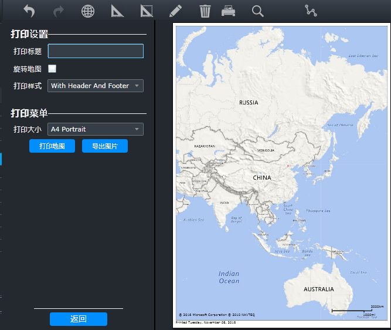

导出图片
将地图以及地图上的测量、标绘结果导出为图片保存在本地，或者直接打印。
| 1. | 单击地图工具栏上的〖 
Fig 10 打印预览 |
| 2. | 输入“打印标题”，打开打印预览窗口，如下图所示。 |
| 3. | (可选)勾选“旋转地图”，可将地图逆时针90度旋转。 |
| 4. | 选择“打印样式”和“打印大小”。 |
| 5. | 单击〖打印地图〗按钮，弹出打印对话框，设置打印参数，单击〖打印〗按钮打印地图。 |
| 6. | 单击〖导出图片〗按钮，打开“另存为”窗口，选择保存的路径和文件名称，单击〖保存〗按钮，即可将地图导出为图片保存到本地。 |
| 7. | 单击〖返回〗按钮，关闭打印预览窗口。 |